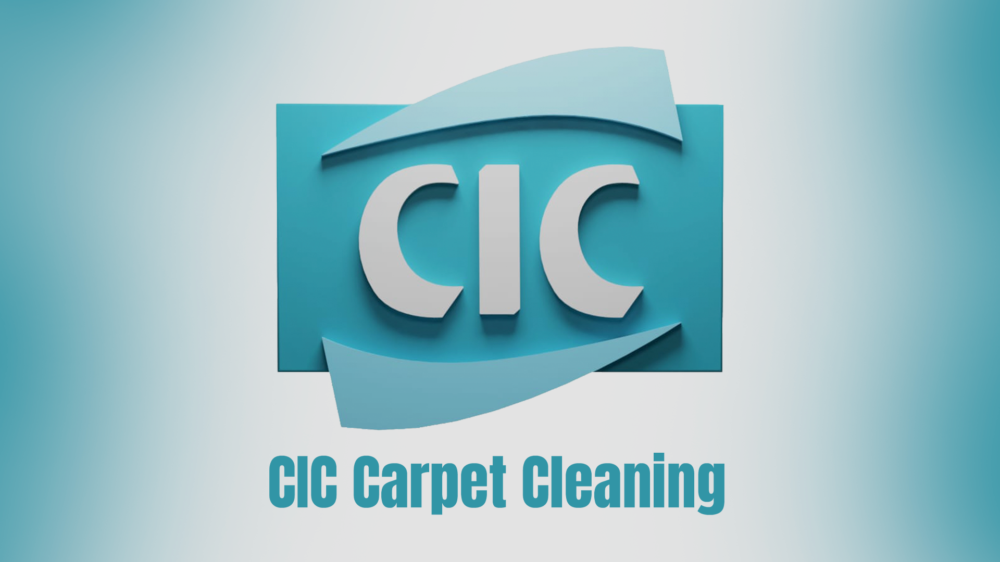
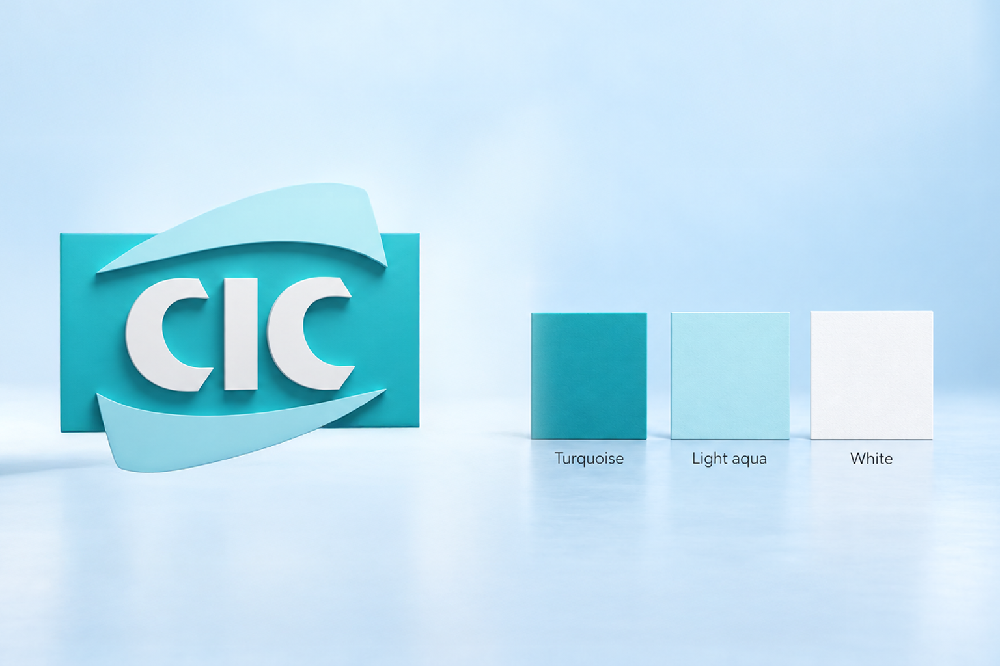
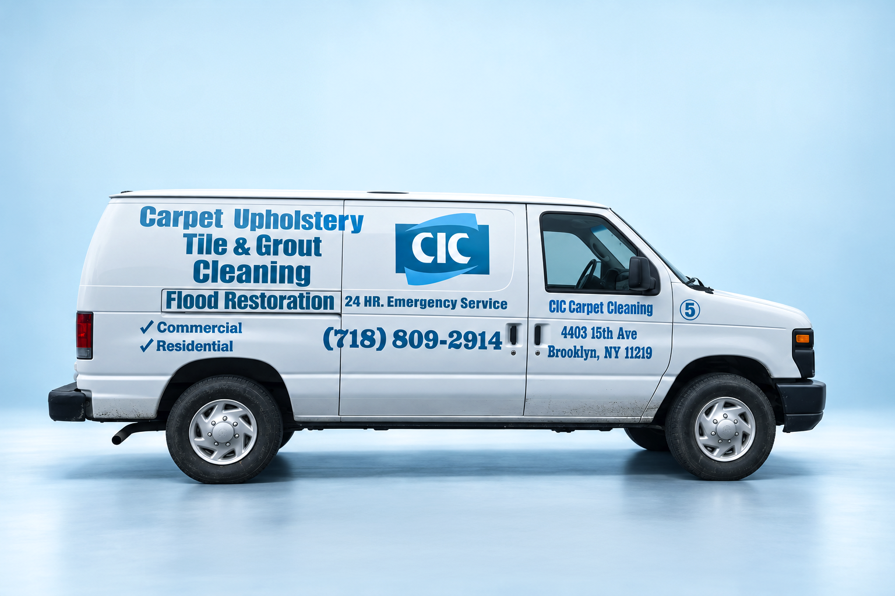
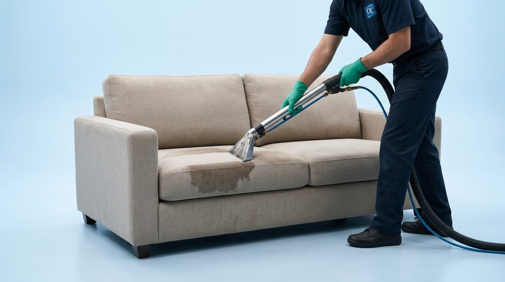

CIC Carpet Cleaning

Overview
For CIC Carpet Cleaning, I developed graphics that gave their carpet and rug cleaning services a clear, professional presence. Working within the existing brand, I used clean layouts, purposeful imagery, and focused messaging to communicate the care behind their work and make their services easy to understand.


